← Índice de los 69 tutes de IDA
Tute 2 · Sistemas de numeración
▶ video afín (mismo autor, en x64dbg): «03 Registros, Flags y Números» · se conecta con: Herramientas · IDA · Instrucciones · Flujo · Debugger · Números
INTRODUCCIÓN AL REVERSING CON IDA PRO DESDE CERO PARTE 2.
Como este es un curso desde cero hay cosas que al inicio muchos ya sabrán, podrán saltearlas si quieren, pero para la mayoría que no lo saben, será creo yo importante y por eso las agregamos.
SISTEMA NUMERICO
Los tres sistemas numéricos que más se utilizan son el binario el decimal y el hexadecimal.
El concepto básico que deben tener de ellos es el siguiente:
BINARIO: Se representa los números con dos caracteres el 0 y 1 por eso se llama BINARIO.
DECIMAL: Se representa todos los números con 10 caracteres (del 0 al 9) por eso se llama decimal.
HEXADECIMAL: Se representa todos los números con caracteres del 0 al F (del 0 al 9, mas A, B, C, D, E y F, o sea serian 16 caracteres en total).
Vemos en la IDA en la parte inferior una barra para ejecutar comandos de PYTHON esto nos servirá para poder pasar de uno a otro fácilmente.
Si no le aparece la barra de Python, desinstalar IDA, desinstalar Python y volver a instalar IDA y el Python que trae incluido.
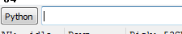
Si tipeo por ejemplo 0x45 lo interpreta al tener el 0x delante como un numero hexadecimal, podremos convertir de hexadecimal a decimal solo apretando ENTER.
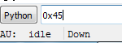
Al apretar
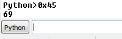
Nos da 69 que es 0x45 hexadecimal pasado a decimal.
Si queremos hacer la conversión al revés debemos usar la función hex()
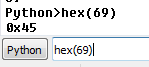
Para pasar a binario usando bin()
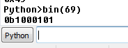
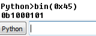
El resultado es 1000101 el 0b delante significa binario, podemos pasar de binario a decimal o a hexadecimal.
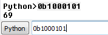
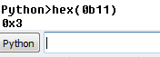
O sea como resumen cualquier numero escrito directamente al apretar ENTER se mostrara el resultado en decimal, para pasarlo a HEXA o BINARIO deberemos usar las funciones de Python hex() o bin().
Para manejarnos en la conversión también IDA posee una calculadora integrada para convertir, en VIEW-CALCULATOR con lo cual podremos ver un número convertido a todos los sistemas numéricos a la vez, además de si corresponde el valor a algún carácter ascII, como en este caso 0x45 es la E.

NUMEROS NEGATIVOS en HEXADECIMAL
Ahora en casi todo momento trabajaremos en hexadecimal, pero la pregunta es cómo se representa un numero hexadecimal negativo en 32 bits?
Si en un número binario de 32 bits usamos el primer bit para significar si es cero que es positivo y si es uno que es negativo.
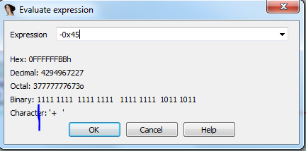
Vemos que un valor como por ejemplo -0x45 en hexadecimal se puede representar como 0xffffffbb y que su primer byte en binario es 1.
De esta forma el mínimo valor positivo obviamente es cero (aunque cero no es positivo ni negativo jeje) pero cuál sería el mayor valor positivo que podemos representar?
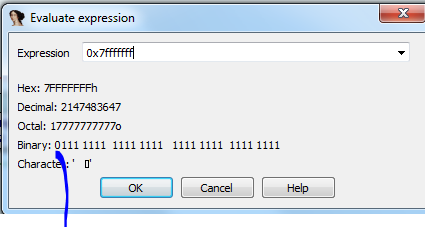
Vemos que en binario, si llenamos todo con 1 menos el primer bit que usamos para el signo, el 0x7fffffff es el máximo positivo si consideramos el signo, además al sumarle uno ya estando todos los otros bits a uno, deberá cambiar el bit de signo a 1.
Si le sumamos uno
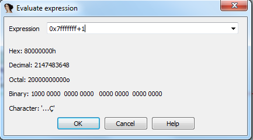
Vemos que el primer bit cambia a 1 y todos los restantes se ponen a cero.
El tema es que este evaluador considera los números como todos positivos al dar el resultado salvo que le pasemos nosotros el valor negativo, por ejemplo.
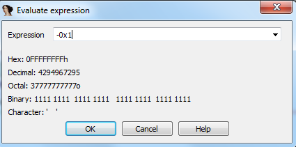
Vemos que el valor mínimo negativo o sea -1 corresponde a 0xFFFFFFFF y el valor máximo negativo será 0x80000000.
O sea que cuando en una operación no se considere el signo entonces los valores serán todos positivos desde 0 hasta 0xFFFFFFFF.
Mientras que si una operación considera el signo tendremos los positivos desde 0x0 a 0x7FFFFFFF y los negativos desde 0xFFFFFFFF a 0x80000000.
POSITIVOS
000000000 es igual a 0 decimal 000000001 es igual a 1 decimal
………………………………..
………………………………..
7FFFFFFF es igual a 2147483647 decimal (que sería el máximo positivo)
NEGATIVOS
FFFFFFFF sería el -1 decimal FFFFFFFE seria el -2 decimal
………………………………
………………………………
80000000 seria -2147483648 decimal (que sería el máximo negativo)
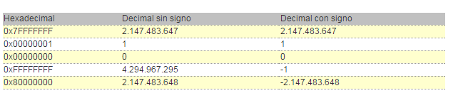
CARACTERES ASCII
Uno de los temas que debemos conocer también es la forma en que nuestro sistema escribe datos en la pantalla, para eso asigna a cada carácter un valor hexadecimal, de forma que puede interpretar los mismos como si fueran letras, números símbolos etc.
Vemos a continuación en la primera columna el valor decimal, en la segunda columna el valor hexadecimal y en la tercera el carácter o sea por ejemplo si quiero escribir un espacio, tengo que usar el 0x20 o 32 decimal, cualquier carácter que necesitemos, sea letra o numero podemos verlo en esta tablita.
Dec.Hex.Caract.Dec.Hex.Caract.Dec.Hex.Caract.3220esp6440@9660`3321!6541A9761a3422"6642B9862b3523#6743C9963c3624$6844D10064d3725%6945E10165e3826&7046F10266f3927'7147G10367g4028(7248H10468h4129)7349I10569i422A*744AJ1066Aj432B+754BK1076Bk442C,764CL1086Cl452D-774DM1096Dm462E.784EN1106En472F/794FO1116Fo483008050P11270p493118151Q11371q503228252R11472r513338353S11573s523448454T11674t533558555U11775u543668656V11876v553778757W11977w563888858X12078x573998959Y12179y583A:905AZ1227Az593B;915B[1237B{603C<925C\1247C|613D=935D]1257D}623E>945E^1267E~633F?955F_1277F
Como vimos IDA en esa calculadora que evalúa expresiones tiene para mostrar los caracteres correspondientes como vimos en el caso del 0x45 que era el carácter ascII correspondiente a E.
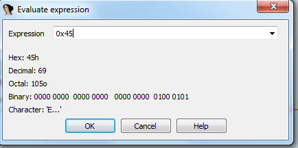
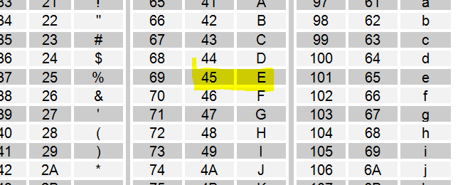
También en la barra de Python usando la función chr() obtenemos el carácter ascII.
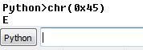
En la ventana HEX DUMP también tenemos una columna que muestra los caracteres ascII.
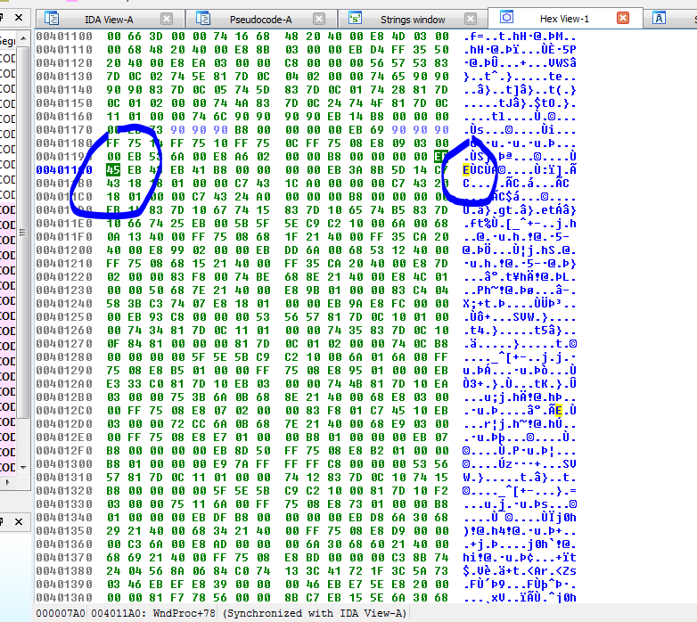
Allí vemos el 45 que se encuentra en la columna de la derecha que corresponde al caracter E.
POSIBILIDADES DE BUSQUEDA
Vemos que en el menú esta SEARCH y si estamos en la pestaña del desensamblado o IDA-VIEW, allí podemos ver múltiples opciones de búsqueda que con muy sencillas de interpretar.
Si cambiamos a la ventana de desensamblado y no aparecen los submenús de SEARCH, deberemos clickear en alguna instrucción para que se cambie el foco y aparezcan.
Algunas opciones que se ven en la imagen siguiente corresponden a plugins agregados a mi IDA y no les aparecerán en la versión 6.8 sin tenerlos instalados.
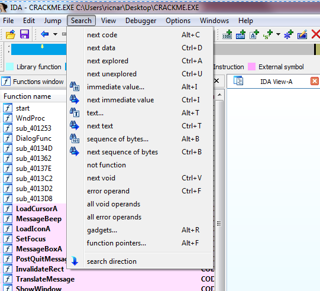
NEXT CODE
Buscará la próxima instrucción que haya sido interpretada como CODIGO, si hay una parte que no es detectada como código la salteara.
Search completed. Found at 004011A1.
Search completed. Found at 004011A3.
Search completed. Found at 004011A5.
Search completed. Found at 004011AA.
Search completed. Found at 004011AC.
Search completed. Found at 004011AF.
Search completed. Found at 004011B6.
NEXT DATA
Buscará la próxima dirección donde haya detectado data o manejo de datos en cualquier sección.
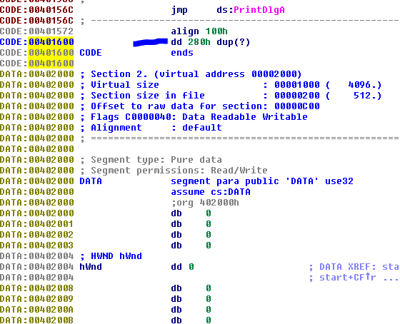
Como en ese caso detecto un dword (dd) en esa dirección que no corresponde a ninguna instrucción, obviamente si seguimos buscando buscara la siguiente data en este caso se ve debajo la sección data si vuelvo a buscar.
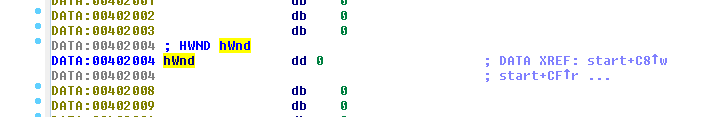
Veo que para en una dirección donde a la derecha hay una referencia por lo tanto es un lugar donde trabajara con datos.
Y así va salteando las direcciones que solo contienen ceros y no hay ninguna referencia, y nos va mostrando donde hay datos que posiblemente el programa use.
Search completed. Found at 00402004.
Search completed. Found at 00402048.
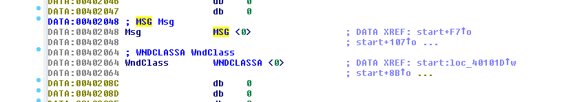
Así que salteara lo que no está detectado como data usada por el programa y buscara la siguiente.
SEARCH EXPLORED Y UNEXPLORED
En el primero salteara por código o data que detecto y en el segundo por las zonas no detectadas como código o data valido.
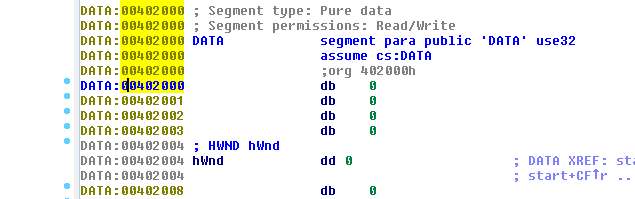
La zona con ceros que están en 0x402000 la halla con SEARCH UNEXPLORED.
Search completed. Found at 00402000.
Search completed. Found at 00402000.
Search completed. Found at 00402001.
Search completed. Found at 00402001.
Search completed. Found at 00402002.
Search completed. Found at 00402003.
Search completed. Found at 00402008
Repitiendo vemos que saltea la data de 0x402004 pues es la considera EXPLORED.
SEARCH INMEDIATE VALUE - SEARCH NEXT INMEDIATE VALUE
Buscará la constante que le escribamos entre las instrucciones y la data.
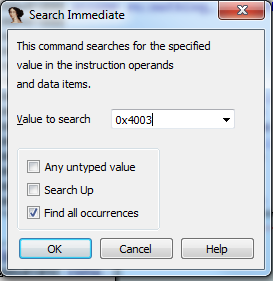
Si tipeamos FIND ALL OCURRENCES buscara todas y sino buscara una a una, en este caso para repetir deberé usar SEARCH NEXT INMEDIATE VALUE.
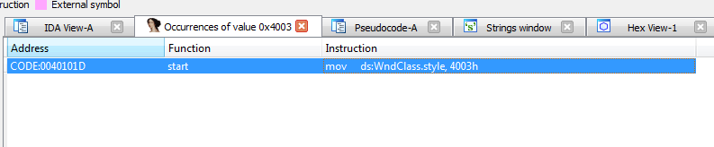
SEARCH TEXT –SEARCH NEXT TEXT
Buscará el texto que le tipeemos inclusive regular expressions si queremos.
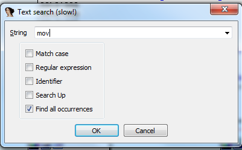
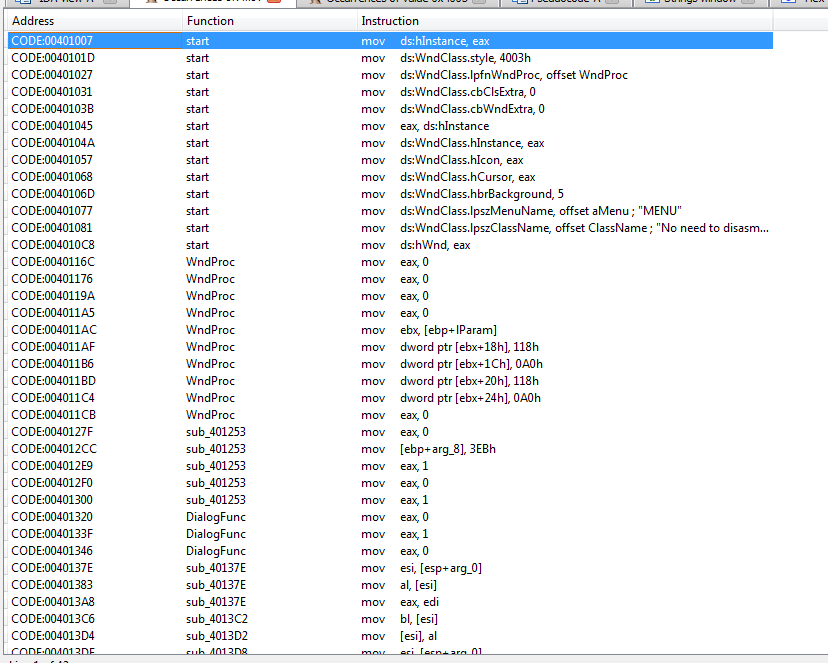
Si ponemos buscar solo una necesitaremos SEARCH NEXT TEXT para buscar la siguiente.
SEARCH SEQUENCE OF BYTES
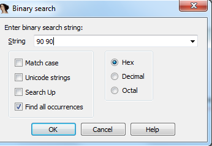
Buscará la secuencia de bytes hexadecimal que tipeemos entre los bytes del ejecutable.
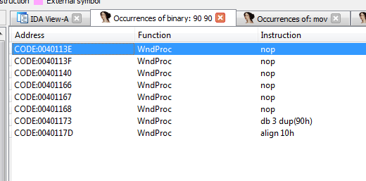
Si hacemos doble click en la primera por ejemplo
Y en las opciones del IDA marcamos 6 para que nos muestre por ejemplo solo 6 bytes como máximo correspondientes a cada instrucción.
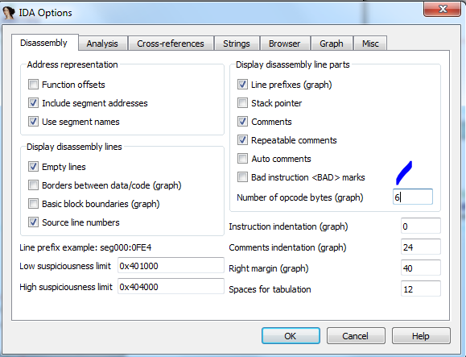
Vemos que encontró los 90 90 que le pedimos.
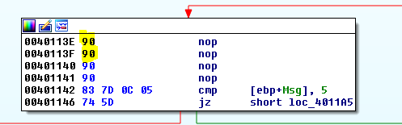
SEARCH NOT FUNCTION
Busca hasta la siguiente dirección donde encuentra algo no interpretado como función completa.
Search completed. Found at 004013D7.
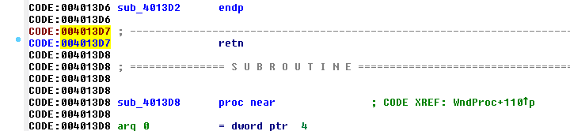
Allí hay un RET suelto no interpretado como función así que lo halla, a veces hay funciones que IDA no logro determinar que son funciones pero son código valido.
Esas son las funciones más importantes de búsqueda que trae en el menú el IDA, por supuesto al tener la posibilidad de manejar scripts de Python, siempre se puede crear mayores posibilidades con algunas líneas de código.
Vemos que cada búsqueda que realizamos no se perderá pues se abre una pestaña con el resultado y siempre quedara allí hasta que cerremos la pestaña correspondiente.
Vamos paso a paso sin apurar para que nadie se complique que hay mucho para ver.
Hasta la parte 3
Ricardo Narvaja